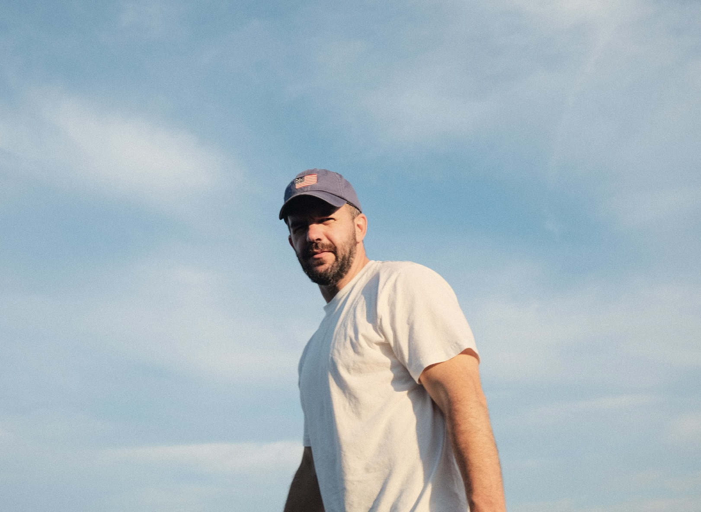

Portrait by Sophia, age 4
David Jergovic is a commercial real estate finance professional, investor, and founder of OneShotLens. Originally from Omaha, Nebraska, he earned a BBA in Finance with an emphasis in Real Estate from TCU and an MBA from the University of Dallas. Over a career spanning nearly two decades at one of the world’s largest real estate investment managers, David has worked across the commercial real estate spectrum, solving complex problems and helping shape thoughtful, practical solutions.
Outside of work, his interests include photography, design, music, and exploring how emerging technology changes the way ideas are built and expressed. He lives in Chicago with his wife, Kate, their daughters Sophia and Frankie, and their English Bulldog, Bo.